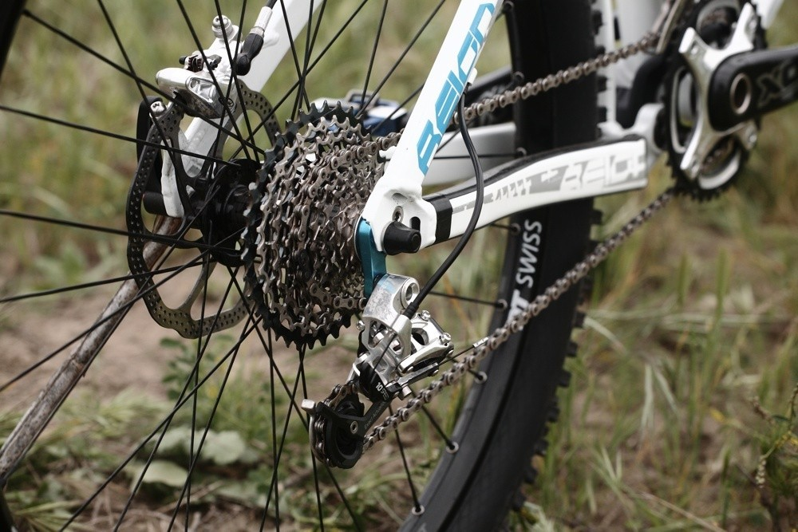
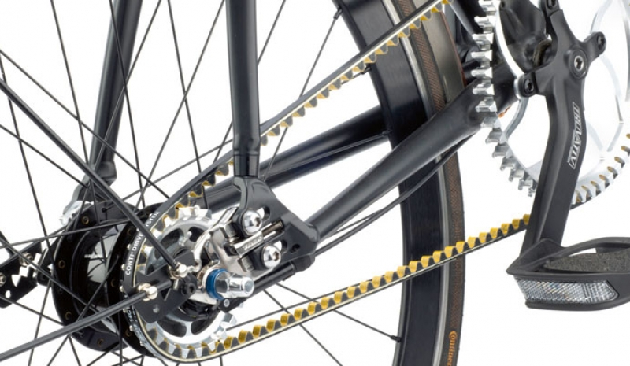
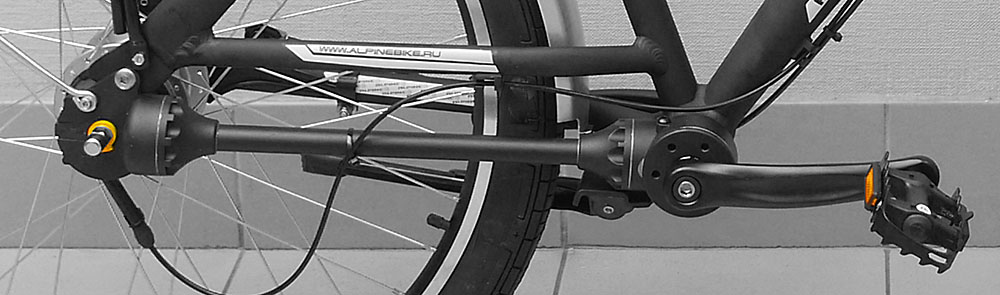

Всё о велосипедах
Следующий параметр при выборе велосипеда – тип привода. Под этим понятием подразумевают деталь велосипеда при помощи которой вращение педалей передается на заднее колесо. На обычном классическом велосипеде это всем известная цепь. Так как это самый распространенный тип привода, подробно заострять внимание на цепи мы не будем. Но это не единственный способ.
В последнее время стала набирать популярность ременная передача. Особенно часто она используется на городских складных велосипедах, так как сочетает в себе следующие качества. Она легкая, легко сгибается и не требует смазки, а соответственно вы не будете пачкать свои штаны при складывании велосипеда и подъеме его на N-этаж. Стоит заметить, что классическая система переключения передач (перекидка) на велосипеде с ременным приводом невозможна, поэтому единственный на сегодняшний день способ – это использование планетарной втулки. К минусам использования ремня вместо цепи я бы отнес низкую надежность при повышенных нагрузках.
Ну и напоследок совсем брутальный карданный тип привода. Кратко о нем можно сказать так – он существует, но из-за совокупности серьезных недостатков не получил широкое распространение. Главный минус – он тяжелый и громоздкий.
Подводя итог можно сказать, что самым оптимальным по надежности, ремонтопригодности, дешевизне все так же остается классическая цепная передача. Ну а что будет с ремнями дальше, посмотрим.